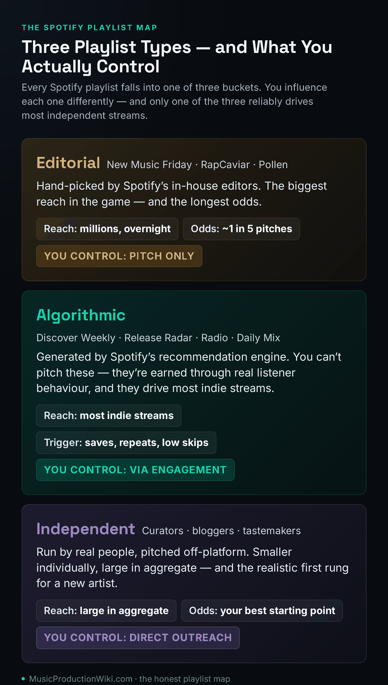
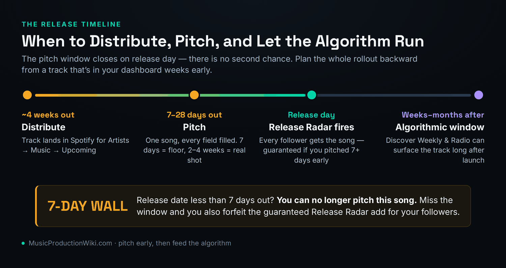
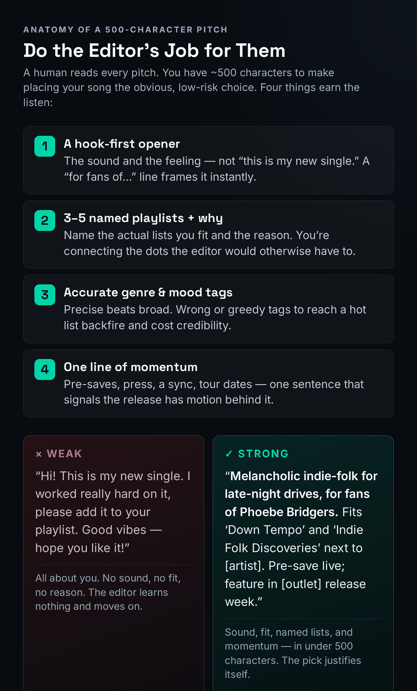

Pitch every unreleased track in Spotify for Artists at least 7 days before release — 2 to 4 weeks is materially better. You can pitch one song per release, and a pitch is the only route to editorial and the switch that drops your song into every follower’s Release Radar on launch day. Editorial placement is rare and you control it least. The algorithmic playlists — driven by saves, repeats, and low skips — are where independent artists actually earn most of their streams.
Almost every guide to getting on Spotify playlists is written by a company that wants to sell you a playlist-pitching service, and it shows. The advice bends toward whatever makes editorial placement sound like a product you can buy with the right campaign. It isn’t. The honest version is less flattering and far more useful: the placement everyone chases is the one you control the least, the same free pitch quietly guarantees you something more reliable than any editor ever will, and the streams that actually build an independent career mostly come from a system you can’t pitch at all — only feed. Get those three facts straight and the whole process stops feeling like a lottery and starts looking like a plan.
This guide walks the real mechanics: the three kinds of playlist and which ones you can influence, exactly how the Spotify for Artists pitch tool works in 2026, why you pitch every single release even when you expect a no, how to write 500 characters that earn a genuine listen, and where to point your actual effort — the engagement signals that move the algorithm. None of it requires a budget. All of it assumes your record is finished, distributed, and good enough to sit next to the songs already on the lists you want.
The Three Playlist Types (and Which You Can Actually Influence)
The single most useful thing you can understand before you pitch anything is that “Spotify playlist” is not one target. It is three completely different systems, with three different gatekeepers, three different success rates, and three different amounts of control on your end. Most articles blur them together into a vague “get playlisted” goal, which is exactly why most artists waste their energy on the one they can least affect. Separate them cleanly and the strategy writes itself.

Editorial playlists are the famous ones: New Music Friday, RapCaviar, Pollen, Lorem, the big genre and mood flagships. Real human editors at Spotify hand-pick every track on them. A single placement on a large editorial list can deliver millions of streams in a week, which is why they dominate the conversation. They are also the hardest thing to land in all of music — the realistic add rate for pitched songs has historically hovered around one in five, and that figure is heavily skewed toward artists who already have momentum. The only way in is the pitch tool inside Spotify for Artists. There is no email, no contact form, no back channel, and anyone selling you “editorial access” is selling you nothing.
Algorithmic (or personalized) playlists are a different animal entirely: Discover Weekly, Release Radar, Radio, Autoplay, and the Daily Mixes. No human curates these. Spotify’s recommendation engine builds a unique version for every listener based on behaviour — what they save, finish, repeat, and skip. You cannot pitch them. There is no submission form because there is nobody to submit to. And yet, for the average independent artist, these lists drive far more streams over time than any editorial placement, because they keep serving your track to new, well-matched listeners long after release week. The control you have here is real but indirect: you earn algorithmic reach by generating genuine engagement, which we’ll get to.
Independent (or listener) playlists are everything else — lists run by curators, bloggers, tastemakers, brands, and ordinary fans. Individually most are small. Collectively they are enormous, and crucially, they are the one tier where a brand-new artist with no leverage can actually get a yes. You reach these curators off-platform, with personalized outreach, and a good placement on a genuinely engaged independent list can do two things at once: bring real listeners, and feed the engagement signals that nudge the algorithm in your favour. For an artist starting from zero, independent playlists are the realistic first rung — not editorial. If you want the broader playbook for moving a release, our guide to promoting music on Spotify sits alongside this one, and the wider independent promotion guide covers the off-platform side in depth.
Hold this taxonomy in your head for the rest of the article. Every tactic below maps to one of these three buckets, and the biggest strategic mistake an artist can make is pouring all their hope into the editorial bucket — the one with the longest odds and the least control — while ignoring the two where their effort actually compounds.
How Editorial Pitching Actually Works in 2026
The editorial pipeline starts and, for most pitches, ends inside Spotify for Artists. If you haven’t claimed your artist profile there yet, that’s step zero — the pitch tool simply doesn’t exist for you until you do. Once you’re in, the mechanics are straightforward; the discipline is where people fall down.
First, your track has to be in the system as an upcoming release. That means it must already be delivered through a distributor — DistroKid, CD Baby, TuneCore, or whichever service you use — with a release date set far enough out that it shows in your dashboard under Music → Upcoming. If you’re not yet distributing, start with our guide to getting your music on Spotify and the broader distribution explainer; the pitch is downstream of delivery, and you can’t pitch a song Spotify doesn’t know is coming. The distributor you pick barely matters for pitching itself — if you’re weighing options, our DistroKid vs CD Baby and DistroKid vs TuneCore comparisons break down the real trade-offs — but the timing of delivery matters enormously, which we’ll come back to.
With the track showing in Upcoming, you select it and choose Pitch a song. Then you fill out everything: primary and secondary genre, mood, the instruments, the “culture” and style tags, whether it’s a cover, the languages, and the 500-character description. Fill every field, accurately. The metadata isn’t bureaucratic box-ticking — it’s how editors and the recommendation system both understand where your song belongs, and sloppy or dishonest tags hurt you in both places. Accurate metadata is the quiet foundation under every kind of placement.
A few hard rules govern the tool, and they catch people out constantly. You can pitch one song per release — choose your lead single deliberately, because for an EP or album you’re betting on a single track. You cannot pitch compilations, and you cannot pitch a song where you’re only a featured artist; Spotify only lets the lead artist pitch. Once a song goes live, it is no longer eligible — the window slams shut on release day with no retroactive submission. You can edit a pitch up until release, but there’s no guarantee an editor sees the change, so treat your first submission as your real one.
There’s also a quiet bonus most artists never use. If you’re eligible for a “This Is” playlist — Spotify’s artist-spotlight list — you can pin the song you pitched to the top of it. Pinning takes effect a few days after the track goes live and holds for up to 28 days post-release, in the order songs were requested. It’s a small, free, guaranteed bit of self-placement that costs nothing and sits entirely in your control, which makes it exactly the kind of lever worth pulling on every release while you wait on the editorial coin flip.
Two more things worth internalizing because they reshape your expectations. Editors might pick a different song from your release than the one you pitched — the pitch puts your whole release on their radar, not just the single track. And placement can arrive after release day: a curator may find your song weeks later, and a single pitch can land on multiple lists if several editors find it relevant. Spotify emails you if you’re picked; silence means no placement, and you won’t get a rejection notice. Editorial placements also rotate — being removed from a list after one to four weeks is completely normal, not a sign anything went wrong. None of this is in your control once you hit submit. Which raises the obvious question: if the odds are this long and the outcome this opaque, why pitch at all?
The Release Radar Guarantee: Why You Pitch Every Time
Here is the fact the upsell blogs bury, and it is the most important single thing in this guide: pitching a song at least 7 days before release automatically adds it to all of your followers’ Release Radar playlists on launch day. That isn’t a maybe. It isn’t subject to an editor’s taste. It is a guaranteed, mechanical consequence of pitching on time — and it is exposure you simply forfeit if you don’t pitch.
Release Radar is the personalized new-music playlist every Spotify user gets each Friday, surfacing fresh releases from artists they follow. When you pitch early, every person who follows you gets your new song delivered into that playlist without lifting a finger. For an artist with a real following, that’s a meaningful baseline of guaranteed plays on day one — the exact kind of early engagement that, as we’ll see, the algorithm watches most closely. This is why the answer to “should I bother pitching when I know editorial will probably say no?” is an emphatic yes, every single release, no exceptions. Even when the editorial dice come up empty — which is most of the time — the pitch has already paid for itself through Release Radar and through the metadata signal it sends the recommendation system.
Pitch every release, on time, forever. The editorial shot is a free lottery ticket; the Release Radar add and the algorithmic metadata signal are the guaranteed payouts. An artist who skips the pitch because “I’ll never get RapCaviar anyway” is throwing away the two things pitching reliably delivers to chase the one it doesn’t.
This reframe should change how you feel about pitching entirely. Stop measuring a pitch’s success by whether you landed an editorial slot — by that yardstick almost every pitch “fails,” and you’ll quit doing it. Measure it instead by what it guarantees: your followers reached, your release plan signalled to the algorithm, and a small, free chance at the jackpot on top. That math says pitch always. The only way to lose is to not pitch, or to pitch too late and miss the 7-day cutoff — which is a planning failure, not bad luck.
Timing: 7 Days Is the Floor, Not the Target
The 7-day minimum is the most-quoted number in playlist pitching, and it’s the most misunderstood. Seven days is the point at which the pitch tool disappears, not the point at which you should be pitching. Spotify itself advises pitching at least two weeks out, and experienced curators and pitch services consistently push three to four weeks. Treat 7 days as the wall you must never hit, and aim to be weeks ahead of it.

The reason earlier is better is purely human. Spotify’s editors plan their playlists ahead of each Friday’s flood of releases. If you pitch early, your song sits in their queue while they’re actually making decisions. If you pitch at the last minute, you’re at the bottom of a queue that may be so deep they never reach you — especially in a busy release week. Lead time doesn’t guarantee a placement, but it guarantees you a fair shot at being seen, and a late pitch quietly forfeits even that.
Lead time buys you a second thing that matters just as much: a runway. The weeks before release are when you build pre-save campaigns, tease on social, and line up the off-platform pieces that turn release day into a coordinated push rather than a quiet upload. An editor who opens your profile and sees a full queue of upcoming releases and a release plan with motion behind it reads you as professional and consistent — exactly the kind of artist they’d rather bet a playlist slot on.
The pre-save runway isn’t just optics, either — it’s mechanical. A pre-save converts a fan’s intent into an automatic save the moment the track goes live, which front-loads exactly the day-one engagement the algorithm weighs most heavily. Stack that on top of the guaranteed Release Radar add from pitching early, and your release lands with a burst of saves and completions from real fans in the first hours rather than trickling out. That early spike of genuine engagement — not a bought one — is often the difference between a track the algorithm starts circulating and one it quietly lets sink. The runway is where you manufacture it honestly.
Practically, this means planning your distribution schedule around pitching, not the other way around. Deliver the track to your distributor early enough that it appears in your Spotify for Artists Upcoming roughly a month before release. That single habit — deliver early, pitch early — fixes the most common and most avoidable failure in the entire process. If you’re unsure how delivery timing works through your distributor, our music distribution guide and our DistroKid review cover the upload-to-live lag you need to budget for.
Writing a Pitch That Gets a Real Listen
A staff member reads every pitch. That’s the premise to write toward. You have about 500 characters and a few seconds of a busy human’s attention, and your job is not to impress them with your story — it’s to make placing your song the obvious, low-risk choice by doing the editor’s job for them. The single biggest mistake is writing about yourself. The editor does not care that you worked hard or that this is your debut. They care what the song is and where it fits.

Lead with the sound and the feeling. Open with what the song is, not “this is my new single.” A “for fans of…” line is the fastest way to do this honestly: naming one to three well-known artists who genuinely match your sound gives an editor an instant frame of reference. “Melancholic indie-folk for late-night drives, for fans of Phoebe Bridgers” communicates more in eleven words than a paragraph of biography. Be honest with the comparison — reaching for an artist you don’t actually resemble reads as either delusion or manipulation, and it costs you credibility you can’t get back.
Name the playlists you fit, and why. If you can point to three to five specific lists your song belongs on and give a one-line reason for each, you’ve connected dots the editor would otherwise have to connect themselves. This is where research pays off: study the playlists that already feature artists who sound like you. On a similar artist’s profile, the “Discovered On” section shows the playlists actually driving their listeners — a goldmine for finding the editorial and independent lists that might support you too.
Tag accurately, and resist the temptation to game it. Precise genre and mood tags beat broad ones — “dream pop, wistful, late-night” is worth more than “pop, energetic.” And do not mis-tag to sneak onto a hot list. Slapping a trending tag on a song that doesn’t fit doesn’t get you placed; it gets you mismatched and burns trust with the system and the editor both. Accuracy is the strategy.
Close with one line of momentum. A single sentence about your release plan — a pre-save campaign live, press confirmed, a sync placement, tour dates, a cultural moment your track connects to — signals that the release has motion behind it and gives the editor a reason to believe a placement won’t fall flat. One line. Your full backstory belongs in a press kit, not in 500 characters competing for a curator’s attention.
Put those four together and the weak-versus-strong contrast is stark. The weak pitch is all about the artist and tells the editor nothing actionable. The strong pitch names the sound, the fit, the specific lists, and the momentum — and the placement justifies itself. Same song, completely different odds.
The Part That Actually Moves Streams: The Algorithm
If you take one strategic idea from this guide, take this: for most independent artists, the algorithm — not editorial — is where the streams come from. Discover Weekly, Release Radar, Radio, and Autoplay collectively keep serving your music to new listeners for months, long after any editorial placement would have rotated off. And unlike editorial, you have a real, repeatable hand in triggering them. You can’t pitch the algorithm, but you can feed it.
The recommendation engine watches engagement, and the signals that matter are consistent: save rate (the share of listeners who add your track to their library), completion rate (how many listen past the critical first 30 seconds instead of skipping), repeat listens, and playlist adds by real users to their own playlists. High engagement tells Spotify your track has organic demand, and the system responds by pushing it to more similar listeners — a flywheel that, once it starts turning, can outrun a missed editorial slot entirely. Low engagement does the reverse: lots of plays with no saves trains the system to deprioritize you.
One subtlety separates the artists who crack the algorithm from the ones who chase vanity numbers: the system reads the shape of your engagement, not just its size. A thousand streams that arrive as a one-off promotional spike with almost no saves and high skips reads as a flash with no demand behind it — and the engine treats it accordingly. A few hundred streams from listeners who save, finish, and come back reads as organic demand worth amplifying. This is why a smaller, genuinely engaged release can out-travel a bigger but hollow one, and why buying plays is worse than useless: it deliberately manufactures the exact pattern the algorithm is built to discount.
So your real work, the part worth obsessing over, is generating genuine early engagement. Obsess over the first 30 seconds of the song — a slow build that bleeds skips is an algorithmic liability. Drive your existing fans to save the track, not just stream it, in the first 48 hours. Run a release every few weeks rather than once a year, because consistent releases give the system more data and more chances to serve you. Build the kind of cross-platform presence — an active TikTok, a real fanbase — that converts a casual playlist listener into a follower who saves and repeats. Our guides to getting more streams on Spotify, building a fanbase, and promoting on TikTok go deep on each lever. One more honest note on the math: every stream pays out the same handful of fractions of a cent regardless of which playlist it came from, so if you’re thinking about the economics, our breakdowns of Spotify’s per-stream payout and how streaming royalties work are worth a read — volume from the algorithm is what turns those fractions into real money.
A word on Discovery Mode, since it gets pushed hard in 2026 as a growth hack. It lets you flag specific tracks for an algorithmic boost in Radio and Autoplay — but in exchange Spotify takes a roughly 30% cut of the royalties on streams those promoted plays generate. It can be a reasonable tool used selectively on a priority release, and it can quietly erode your income if you leave it on across your catalogue chasing listener counts. There’s no upfront fee, which is exactly why it’s easy to overuse. Treat it as one lever among many, not a strategy — and never as a substitute for earning the engagement that drives the algorithm for free.
Step back and the whole system clicks into a single playbook. The pitch is your free editorial lottery ticket and your guaranteed Release Radar add. Independent curators are where you land real early placements while your name is still small. And engagement — saves, completions, repeats, driven hard in the first 48 hours of every release — is the fuel that turns those placements into algorithmic momentum that keeps working for months. Editorial is the cherry on top, not the cake. Build the cake.
Independent & Curator Playlists: The Realistic First Rung
While you’re waiting on editorial silence and building algorithmic momentum, the independent curator scene is where a new artist can actually get a yes today. These lists are run by real people you can reach — through curator directories, music submission platforms, or direct, personalized outreach — and a placement on a genuinely engaged independent list brings real listeners and feeds the engagement signals that nudge the algorithm.
The cardinal rule here is to judge a list by its engagement, not its follower count. A well-curated independent playlist with 5,000 genuinely active listeners will generate more real streams — and more useful algorithmic signal — than a bloated one with 50,000 fake followers. The ratio tells you everything the headline number hides. The same “Discovered On” trick from earlier is your best vetting tool: find an artist currently on a playlist you’re eyeing, open their profile, and check whether that playlist actually appears among the lists driving their listeners. If a 40,000-follower playlist shows up in nobody’s “Discovered On,” it isn’t driving real discovery — it’s a number for sale.
There are paid submission platforms that put your track in front of independent curators in bulk, and used carefully they can save time — but understand what you’re actually buying. You’re paying for a curator’s attention and a listen, never for a placement, and the honest ones make that distinction clear. Run the same vetting on any list a platform places you on that you’d run on a cold pitch: real listeners, healthy traffic, a genuine “Discovered On” footprint. A platform that promises a number of placements or streams for a flat fee has quietly crossed back into pay-for-play territory, with all the risk that carries.
Your outreach to independent curators should follow the same principles as your editorial pitch, only more personal. Keep it to a few sentences. Mention a specific track already on their playlist and explain why yours belongs next to it. Include a clean Spotify link — never a file attachment. Send it well before release. Follow up once, and only once. Curators can tell in a single sentence whether you actually listened to their playlist or copied a template into a hundred inboxes, and the personalized message is the one that gets played.
What NOT to Do (The Credibility-Killers)
A handful of mistakes will sink a pitch or, worse, damage your profile. Avoiding them is as important as doing everything above right.
Don’t pitch late. Miss the 7-day window and you lose both the editorial shot and the guaranteed Release Radar add. Don’t write about yourself. The curator cares about the song and its fit, not your journey. Don’t be vague. “Good vibes” and “please add my song” tell an editor nothing and signal that you didn’t do the work. Don’t mis-tag to chase a trending list — the mismatch costs more than the long shot is worth. Don’t pin your whole strategy on one editorial decision — the artists who treat the pitch as one tool inside a real release plan consistently outperform those waiting on a single yes.
And the big one in 2026: do not pay for playlist placements. The pay-for-play playlist economy isn’t just a waste of money anymore — it’s actively dangerous. Spotify has spent the last two years aggressively purging botted and fake playlists, clawing back artificial streams, and penalizing tracks associated with manipulated listening. Land on a botted list, even unknowingly, and the artificial plays don’t pay out, your engagement ratio craters, the algorithm reduces your reach, and in the worst cases tracks or whole catalogues get pulled — with the burden of proof on you. A placement that promises guaranteed streams for a fee is the single fastest way to undo everything the honest work above builds. Spotify warns artists directly to avoid these services; take the warning seriously.
“Guaranteed Spotify playlist placement” and “X thousand streams for $Y” are the same trap wearing different clothes. Real curators don’t guarantee placement, and real streams can’t be bought. Buying them in 2026 risks clawbacks, algorithmic suppression, and takedowns — for an artificial number that helps you nothing.
The Quality Gate Before You Pitch
One uncomfortable truth underlies all of this: editors place your song next to the songs already on their playlist, and they will not place a track that sounds amateur beside professional records. The same goes for the algorithm — a master that doesn’t hold up against the competition gets skipped, and skips kill the engagement signals you’re working to build. Before you pitch anything, your master has to sit at the bar of the lists you’re targeting: competitive loudness, balanced tone, and translation that holds up on phone speakers, earbuds, and car systems alike.
That’s a mastering and translation question, not a pitching one, and it’s worth treating as a hard gate. Our guide to mastering for streaming covers the loudness targets and tonal balance the platforms expect. If you want to check your master against the standard before you commit, the free Mix Fingerprint tool analyzes your track’s tonal and loudness signature right in your browser, the LUFS target reference gives you the streaming loudness numbers to aim for, and the pre-delivery checklist catches the QC problems that get tracks rejected or that quietly hurt translation. If you’re deciding which platform to prioritize, our Spotify vs Apple Music for artists comparison is the companion piece. Fix the quality gate first; a flawless pitch for a weak master still fails.
3 Pitching Drills
Reading the mechanics is one thing; the habit is built by doing. Run these three before your next release.
- Claim your Spotify for Artists profile if you haven’t.
- Find three artists who genuinely sound like you. On each profile (desktop), open the “Discovered On” section.
- Write down five editorial or independent playlists that appear across those artists — these are the lists you can credibly name in a pitch. Save the list; it’s your target map for every future release.
- Open with a hook-first line: the sound and feeling, plus a “for fans of” comparison you can defend honestly.
- Name three to five specific playlists from your target map and one reason your song fits each.
- Add accurate genre and mood tags and close with one line of momentum. Count the characters — if you’re over 500, cut your backstory first, never the fit.
- Work backward from release day: schedule delivery to your distributor so the track shows in Upcoming about four weeks out.
- Set the pitch for 2 to 4 weeks before release, and lock a pre-save campaign to run in parallel.
- Plan the first 48 hours: who you’ll ask to save (not just stream), where you’ll post, and how you’ll drive the early engagement the algorithm watches. Write it down as a dated checklist and run it.
Frequently Asked Questions
Spotify only contacts you if you’re selected, and that email arrives around release day. There is no rejection notice — if release day comes and goes with no editorial placement, your pitch wasn’t picked this time. One exception: placement can arrive after release, since a curator might discover your song weeks later. Check the Playlists tab under your song in Spotify for Artists for the live status.
No. Editorial pitching through Spotify for Artists is completely free and built into your dashboard — it costs nothing and feeds the recommendation system even when editorial doesn’t pick you. Anyone charging you for “editorial pitching” or “guaranteed placement” is selling something Spotify gives away or something that doesn’t exist. The only legitimate paid services are independent-curator submission platforms, and even those buy you a listen, never a guarantee.
No — once a song goes live it’s no longer eligible for the editorial pitch tool, and there’s no retroactive submission. This is exactly why timing is everything: the only way to pitch is before release, with the track sitting in your Upcoming. An already-released song can still gain independent-playlist placements through curator outreach and can still earn algorithmic reach through engagement, but the editorial pitch window is closed permanently for that release.
There’s no fixed limit — one pitch can result in placement on multiple editorial playlists if several editors independently find your song relevant. It can also land none, which is the common case. And editors may choose a different song from your release than the one you pitched, since the pitch puts the whole release on their radar. You’re not pitching for a single slot; you’re entering the song into consideration across the editorial team.
Yes. The pitch tool only works on an upcoming, unreleased track, and your music gets into Spotify through a distributor — DistroKid, CD Baby, TuneCore, or similar. You deliver the track with a future release date, it appears in your Spotify for Artists Upcoming, and only then can you pitch it. So distribution comes first; pitching is downstream. Deliver early enough that the track shows in Upcoming roughly a month before release, which gives you the lead time editors reward.
You can pay for some independent-curator submissions, but you cannot pay for editorial placement, and you should never buy “guaranteed” placements or streams. In 2026 Spotify aggressively purges botted playlists, claws back artificial streams, and penalizes — sometimes removes — tracks tied to manipulation, with the burden of proof on the artist. Pay-for-play is now a real risk to your profile, not just wasted money. Earn placements through quality, accurate pitching, and genuine engagement instead.
You can’t pitch Discover Weekly — it’s algorithmic and personalized, built per listener from behaviour. You earn it through engagement: saves, high completion rates, repeat listens, and adds to listeners’ own playlists. Getting added to other playlists (independent and editorial) helps, because it exposes your track to engaged listeners whose behaviour then feeds the algorithm. Discover Weekly can also surface your song weeks or months after release, so the engagement you build over time keeps paying off.
Because no response is the default, not a sign something went wrong. Spotify only emails the artists it selects, and editorial add rates are low — historically around one in five pitches, skewed toward artists with existing momentum. A no this time doesn’t mean the pitch was wasted: if you pitched at least 7 days early, your followers still got the song in Release Radar, and the metadata still informed the algorithm. Keep releasing, keep pitching, and keep building the engagement that makes the next pitch land.
Not through the editorial tool — once the song is live, the pitch window is closed and you can’t resubmit it. You can pitch the next song from the same release if it’s still unreleased, and you can always pursue independent-curator placements and algorithmic reach for the released track. The lesson most artists learn here is to choose the lead single carefully, since you only get one editorial pitch per release and it can’t be undone.
Yes. Even when editorial passes, the genre, mood, and culture tags you submit help Spotify understand and categorize your music, which can inform how the recommendation system serves it. And pitching at least 7 days early triggers the Release Radar add for all your followers — the early-engagement boost that the algorithm watches most closely in the first days. So a “rejected” pitch is never wasted; it’s feeding the system that actually drives most of your streams.
There’s no follower threshold for the editorial pitch — any artist can pitch. But momentum helps your odds, because editors favour tracks that already show signs of life, and a bigger following means a bigger guaranteed Release Radar audience on day one. The practical move for a new artist isn’t to wait for some follower count; it’s to pitch every release, target independent playlists you can realistically land, and grow the fanbase and engagement that make every future pitch — and the algorithm — work harder for you.